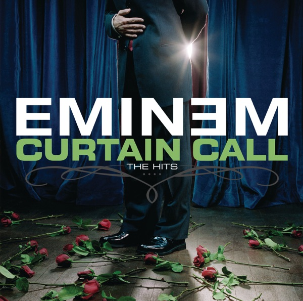

Curtain Call - The Hits
Eminem
Upgrade idea: No significant audiophile reissue exists. The 2005 original pressing (B0005881-01) is the first vinyl edition if an original is preferred over this 2021 reissue.
- Original release
- 2005
- Pressing year
- 2021
- Country
- US
- Format
- 2× Vinyl LP, Compilation, Reissue, Stereo
- Label / Cat#
- Aftermath Entertainment – 602498878965 / Shady Records – 602498878965 / Interscope Records – 602498878965 / Goliath Artists – 602498878965 / Web Entertainment – 602498878965
- Genres
- Hip Hop
- Styles
- Pop Rap
- Discogs release
- 25907689
- Discogs master
- 19951
- Apple Music
- Curtain Call: The Hits
- Wikipedia
- Curtain Call - The Hits
Production notes
Tracklist (Discogs)
| A1 | Intro | |
| A2 | Fack | |
| A3 | The Way I Am | |
| A4 | My Name Is | |
| A5 | Stan | |
| B1 | Lose Yourself | |
| B2 | Shake That | |
| B3 | Sing For The Moment | |
| B4 | Without Me | |
| C1 | Like Toy Soldiers | |
| C2 | The Real Slim Shady | |
| C3 | Mockingbird | |
| C4 | Guilty Conscience | |
| D1 | Cleanin' Out My Closet | |
| D2 | Just Lose It | |
| D3 | When I'm Gone | |
| Bonus Track | ||
| D4 | Stan (Live) |
Tracklist (Apple Music)
| 1 | My Name Is | 4:28 |
| 2 | The Way I Am | 4:50 |
| 3 | Stan (feat. Dido) | 6:42 |
| 4 | Lose Yourself (Soundtrack Version) [Edited Version] | 5:21 |
| 5 | Shake That | 4:34 |
| 6 | Sing for the Moment | 5:39 |
| 7 | Without Me | 4:50 |
| 8 | Like Toy Soldiers | 4:50 |
| 9 | The Real Slim Shady | 4:43 |
| 10 | Mockingbird | 4:10 |
| 11 | Guilty Conscience (feat. Dr. Dre) [Radio Version] | 3:18 |
| 12 | Cleanin' Out My Closet | 4:58 |
| 13 | Just Lose It | 4:07 |
| 14 | When I'm Gone | 4:40 |
| 15 | Stan (Live) | 6:20 |
Personnel & credits
- Marcus Heisser — A&R [Interscope]
- Marc Labelle (2) — A&R [Shady Records]
- Tracy McNew — A&R [Shady Records]
- Slang Inc. — Art Direction, Design
- Steve Strange (2) — Booking [Europe]
- Cara Lewis — Booking [US]
- Lindsay Collins — Coordinator [Studio Coordinator For 54 Sound]
- Sarah Catlett — Coordinator [Studio Coordinator For 54 Sound]
- Nicole Frantz — Creative Director [Creative, Interscope]
- Eminem — Executive-Producer
- Peter Paterno — Legal [Aftermath Legal]
- Gary Stiffelman — Legal [Eminem & Shady Records Legal]
- Theo Sedlmayr — Legal [Eminem & Shady Records Legal]
- Paul Rosenberg — Management [Eminem Management]
- Chris Clancy (2) — Management [Marketing Director, Interscope]
- Andrew Mains — Management [New Media, Interscope]
- Brian Gardner — Mastered By
- Anthony Mandler — Photography By
- Jonathan Mannion — Photography By
- Karin Catt — Photography By
- Nitin Vadukul — Photography By
- Joel Martin (8) — Production Manager [F.B.T. Production Management]
- Kirdis Postelle — Project Manager [Project Coordinator, Aftermath]
- Larry Chatman — Project Manager [Project Coordinator, Aftermath]
- Les Scurry — Project Manager [Project Coordinator, Interscope]
- Dennis Dennehy — Public Relations [Publicity, Interscope]
- David Saslow — Public Relations [Video Promotions, Interscope]
- Randy Sosin (2) — Public Relations [Video Promotions, Interscope]
Identifiers
- Barcode: 602498878965 (Scan; Format: UPC_A)
- Barcode: 6 0249887896 5 (Text)
- Other: B0005881-01LP01 (LP1, side B label text)
- Other: B0005881-01LP02 (LP2, side D label text)
- Matrix / Runout: 10-96636 / B000588101 - A 248616E1/A (Runout side A)
- Matrix / Runout: 10-96636 / B000588101 - B 248616E2/A (Runout side B)
- Matrix / Runout: 10-96636 / B000588101 - C 248616E3/A (Runout side C)
- Matrix / Runout: 10-96636 / B000588101 - D 248616E4/A (Runout side D)
Notes
Back cover has correct tracklisting for each side on this version.
An Aftermath Entertainment/Interscope Records Release; ℗2005 ©2021 UMG Recordings, Inc. 2220 Colorado Ave., Santa Monica,
CA 90404 - U.S.A. Distributed by Universal Music Enterprises, a division of UMG Recordings, Inc. All Rights Reserved.
℗ © 2005 Aftermath Records on side B and side D labels.
Notes & discrepancies
- Track count differs: Discogs=17, Apple Music=15
- Release year differs: your pressing=2021, Apple Music edition=2005. Apple Music typically streams the most recent remaster.
Curtain Call: The Hits is Eminem’s first greatest hits compilation, released in December 2005 on Aftermath Entertainment / Interscope Records. It draws from his commercial peak period — The Slim Shady LP, The Marshall Mathers LP, The Eminem Show, and Encore — compiling the singles and standout tracks that made him the best-selling rap artist of all time and one of the best-selling musicians in any genre. The album includes two new recordings: “Shake That” featuring Nate Dogg and “When I’m Gone,” the latter framed as a farewell letter to his daughter Hailie. The compilation went on to sell over 30 million copies worldwide.
The selection is remarkably strong — “Lose Yourself,” “Without Me,” “The Real Slim Shady,” “Cleanin’ Out My Closet,” “Stan,” “Mockingbird” — and represents a coherent survey of Eminem’s commercial dominance of the early 2000s hip-hop landscape. His technical skill as an MC, combined with Dr. Dre’s production aesthetic and Eminem’s own emerging production chops, defined a sound that dominated radio and album sales for nearly a decade.
The 2021 US reissue is a double LP pressing by Interscope/UMe, catalog 602498878965, with matrix codes
10-96636 / B000588101. This pressing makes the compilation accessible on vinyl for a new generation of listeners, presented in standard weight vinyl with the original compilation artwork.About this 2021 US pressing (2× Vinyl, LP, Compilation, Reissue): Aftermath / Interscope / UMe catalog 602498878965, 2021 reissue. Double LP. Matrix 10-96636 / B000588101.